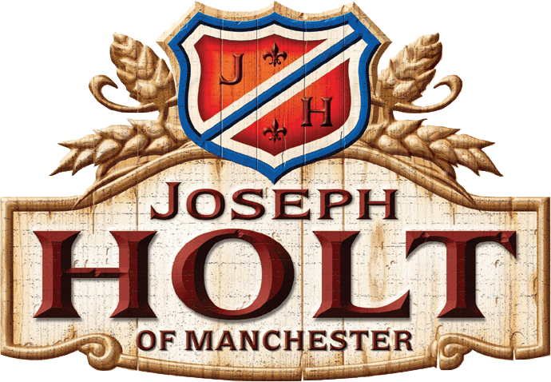

Joseph Holt's Brewery
Joseph Holt's Brewery는 영국 맨체스터에 본사를 둔 양조장으로 1849년에 설립되었다. 같은 가문이 6대에 걸쳐 소유해 온 가족 기업이며 자체 펍도 운영한다.
최종 업데이트

Joseph Holt's Brewery는 어떤 브랜드인가
이 회사는 맨체스터 도심 북쪽 Cheetham의 양조장에서 에일과 라거를 생산하는 가족 경영 양조업체이다. 1860년부터 같은 부지에서 양조해 왔으며, 하루에 15배럴에서 500배럴까지 양조할 수 있다.
에일과 라거용 맥아는 대량으로 납품받아 사일로에 보관하고, 특수 맥아는 포대로 받는다. 그레이터 맨체스터와 노스웨스트 지역에 127개의 펍을 소유하고 있고, 맥주는 전국 500곳이 넘는 곳에 공급된다.
양조 부지에 자체 시추공을 두고 양조용수를 얻으며, 36갤런 캐스크에 맥주를 담는 영국의 몇 안 되는 양조장 중 하나이다.
Joseph Holt's Brewery는 어떻게 시작되고 성장했나
Joseph Holt는 1813년 Bury 인근 직물 마을 Unsworth에서 직공의 아들로 태어났다. Harrison's Strangeways Brewery에서 마부로 일했고, 1849년 Catherine Parry와 결혼했다.
아내의 도움으로 맨체스터 Oak Street의 펍 뒤편에 작은 양조장을 세웠다. 1860년 Cheetham의 Empire Street 부지를 사들였고, 1882년에는 펍 20곳을 갖춘 상태에서 아들 Edward에게 경영을 넘겼다.
Edward Holt는 이후 기사 작위를 받았고 1907년부터 1909년까지 맨체스터 Lord Mayor를 지냈으며 1916년 준남작이 되었다.
Joseph Holt's Brewery의 브랜드 아이덴티티는 무엇인가
6대에 걸쳐 같은 가문이 소유해 온 맨체스터의 양조장으로, 1860년부터 Cheetham 부지에서 양조하며 127개 펍을 직접 소유한다.
Joseph Holt's Brewery의 대표 제품과 서비스는 무엇인가
생맥주로는 Joseph Holt's Bitter, Mild, IPA, Two Hoots, Humdinger가 있고, 니트로 케그 방식의 Smooth(비터)와 Black(마일드)도 있다. 라거로는 Crystal lager, Crystal Cold, Crystal Gold, Diamond lager가 있으며 Trailblazer Stout도 생산한다.
병맥주로는 Humdinger, 1849, Touchwood, Maple Moon, Sixex, Thunderholt, Fifth Sense, Two Hoots, Bitter, Maple Gold가 있다. 캔 제품은 Holt's Bitter와 Holtenbrau이다.
Joseph Holt's Brewery는 지금 어떤 상태인가
같은 가문이 6대에 걸쳐 회사를 소유하고 있다. 창업자의 증손자인 Richard Kershaw가 1980년 이사회에 합류했고, 2000년 부친 Peter Kershaw가 사망한 뒤 최고경영자를 맡고 있다.
맨체스터의 Christie Hospital, Holt Radium Institute와 오랜 관계를 이어 왔으며, 2018년에는 British Beer and Pub Association의 Heart of the Community 상을 3년 연속 받았다.
Joseph Holt's Brewery 로고는 어떻게 변해왔나
자주 묻는 질문
Joseph Holt's Brewery는 어느 나라 브랜드인가요?
Joseph Holt's Brewery는 영국의 식음료 브랜드입니다.
Joseph Holt's Brewery는 언제 설립되었나요?
Joseph Holt's Brewery는 1849년 설립되었습니다.
Joseph Holt's Brewery의 브랜드 아이덴티티는 무엇인가요?
6대에 걸쳐 같은 가문이 소유해 온 맨체스터의 양조장으로, 1860년부터 Cheetham 부지에서 양조하며 127개 펍을 직접 소유한다.
Joseph Holt's Brewery의 대표 제품은 무엇인가요?
생맥주로는 Joseph Holt's Bitter, Mild, IPA, Two Hoots, Humdinger가 있고, 니트로 케그 방식의 Smooth(비터)와 Black(마일드)도 있다.
Joseph Holt's Brewery는 어느 기업이 소유하고 있나요?
같은 가문이 6대에 걸쳐 회사를 소유하고 있다.
Joseph Holt's Brewery의 본사는 어디에 있나요?
Joseph Holt's Brewery의 본사는 맨체스터에 있습니다(위키데이터 기준).
Joseph Holt's Brewery의 공식 웹사이트는 어디인가요?
Joseph Holt's Brewery의 공식 웹사이트는 https://www.joseph-holt.com/ 입니다.
출처와 검증
Joseph Holt's Brewery 관련 참고: 공식 웹사이트 · 위키데이터 Q10540942 · 영어 위키백과. 브랜드명은 한글과 원어를 함께 표기하되 데이터에 없는 표기는 만들지 않습니다. 기원 국가·설립연도는 검수된 정의문에서 확인된 값을 우선하고, 없을 때만 공식 웹사이트 URL이 일치하는 위키데이터 개체의 값을 씁니다. 위키데이터 값은 2026-11-10 기준입니다.